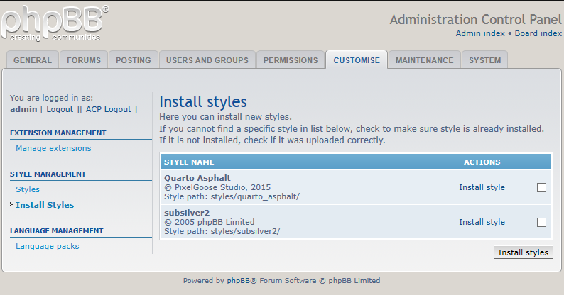

1. Package
“Quarto” theme has five color schemes in both dark and light versions: Asphalt, Teal, Amazon, Red, Cherry.
The package contains the following folders: “Themes”, “PSD & AI” and “Documentation”.
- “Themes” contains all 10 theme color variations for uploading;
- “PSD & AI” contains the Adobe Photoshop and Adobe Illustrator files used for creating the theme (not for uploading).
- “Documentation” contains the Metro theme documentation
2. Installation
To install any of the color schemes you must —
- Upload the folder with the theme color variation you prefer
(
quarto_asphalt,quarto_redetc.) into the styles folder of the phpBB3 board. In the directory tree of your ftp client it will bephpBB3/styles/. (replacingphpBB3with your boards folder name). Now you can set about installing the newly uploaded style to your board. Navigate in the board's ACP to Customise — Install Styles. You should see your recently uploaded styles listed (assuming you uploaded it to the correct location and the style is valid).
-
Simply click “Install style” and the installation is complete!
5. How do I add and edit the prefooter blocks?

5.1 How to add prefooter blocks to the Quarto theme
- Using FTP browse to the following file —
styles/YOUR_THEME/template/overall_footer.htmland download it to your computer. -
Find
<!-- Prefooter blocks go below -->
and add after
<!-- INCLUDE prefooter_blocks.html -->
- Save the template and upload it to
styles/YOUR_THEME/template/
5.2 How to edit prefooter block content
- Using FTP browse to the following file —
styles/YOUR_THEME/template/prefooter_blocks.htmland download it to your computer. -
Replace BLOCK_HEADER and BLOCK_CONTENT with your live header and content inside each block -
<!-- Prefooter block beginning --> <div class="prefooter-block width-33"> <h2>BLOCK_HEADER</h2> <p>BLOCK_CONTENT</p> </div> <!-- Prefooter block end --> - Save the template and upload it to
styles/YOUR_THEME/template/
5.3 How to disable one or two prefooter blocks
You can have up to three prefooter blocks at a time. By default all three blocks are available. If you only need one or two blocks, you can disable the others.
- Using FTP browse to the following file —
styles/YOUR_THEME/template/overall_footer.htmland download it to your computer. -
Each block starts with
<!-- Sidebar block beginning -->and ends with<!-- Sidebar block end -->. So delete these lines and all the code between them to disable unnecessary blocks -
Don't forget to change
width-33in the following line towidth-50if you're using two column prefooter or towidth-100if you need only one column.<div class="prefooter-block width-33">
- Save the template and upload it to
styles/YOUR_THEME/template/
7. How do I add my own logo?
Create your logo and using your FTP client, upload it to —
/styles/YOUR_THEME/theme/images/Download and open the file
/styles/YOUR_THEME/theme/imageset.cssin a text editor-
Find the following css-rule:
.imageset.site_logo { background-image: url("./images/site_logo.svg"); padding-left: 164px; padding-top: 42px; }Legend: file name and type; width in pixels; height in pixels.
- Edit the file name, width, and height to match your new logo.
- Save the template and upload it to
/styles/YOUR_THEME/theme/images/
8. How do I change the background?
“Quarto” theme is ready for visual customization and one of the best way to give it a unique view is to use a beautiful and memorable background. The theme has 15 premade backgrounds (patterns and images) for each version so you can easily use one of them or add your own background image.
The premade background images are stored inside /styles/YOUR_THEME/theme/images/bg-images/ directory and have unique names. Follow these steps to install theme:
- Using FTP browse to the following file —
styles/YOUR_THEME/theme/quarto.css Find the following lines
/* Body background ---------------------------------------- */
Add the following code after the lines:
body { background-image: url("./images/bg-images/YOUR_BACKGROUND_IMAGE"); background-attachment: scroll; background-position: center top; background-repeat: repeat; }- Don't forget to replace YOUR_BACKGROUND_IMAGE with your actual background image that can be found in
//styles/YOUR_THEME/theme/images/bg-images/. - Save the template and upload it to
styles/YOUR_THEME/template/
You can also use your own image or pattern. You can find a lot of them on image stocks like Subtle Patterns and FreeImages.
If you are going to use a big background image, consider using the following css-rules:
background-attachment: fixed;
background-size: 100 auto;
In the first instance you'll get a fixed background and in the second one your background will stretch in full width at any screen resolution and will look nice.
9. Fonts
The main font used in the theme is Noto Sans. Only “Normal 400”, “Normal 400 Italic”, “Bold 700”, “Bold 700 Italic” styles of the font are used.
If your forum language is not using the Latin character set, some of the type symbols may be missing or replaced by default font set. To avoid that you should add your character set to the font link.
- Using FTP browse to the following file —
styles/YOUR_THEME/template/overall_header.html -
Find the following line -
<link href='//fonts.googleapis.com/css?family=Noto+Sans:400,400italic,700,700italic' rel='stylesheet' type='text/css'>
-
Add to the end of the link your character set, e.g.
&subset=latin,cyrillic-<link href='http://fonts.googleapis.com/css?family=Noto+Sans:400,700&subset=latin,cyrillic' rel='stylesheet' type='text/css' />
You can add the following extra character sets:
cyrillic,cyrillic-ext,greek-ext,greek,latin-ext,devanagari,vietnamese. And don’t forget to setlatinas the first character set in this case. - Save the template and upload it to
styles/YOUR_THEME/template/
We also use Font Awesome as a main icon font in our theme. If you want to extend its usage in the theme, you can see the Font Awesome documentation here.
10. PSD and AI Files Description
All icons are stored in vector format inside PSD and AI files. So they can be easily customized for any color scheme.
icons-asphalt.psd— icon set for Quarto Asphalticons-cyan.psd— icon set for Quarto Cyanicons-amazon.psd— icon set for Quarto Amazonicons-red.psd— icon set for Quarto Redicons-cherry.psd— icon set for Quarto Cherryicons-asphalt.ai— icon set for Quarto Asphalticons-cyan.ai— icon set for Quarto Cyanicons-amazon.ai— icon set for Quarto Amazonicons-red.ai— icon set for Quarto Redicons-cherry.ai— icon set for Quarto Cherrysite_logo.ai— site logo
11. Support
If you have any questions that are not answered in this documentation, feel free to contact us via our profile at themeforest.net